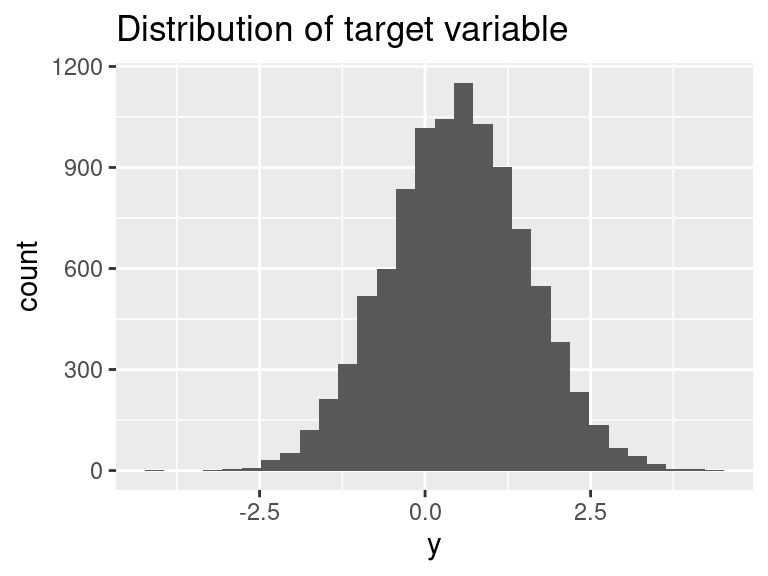
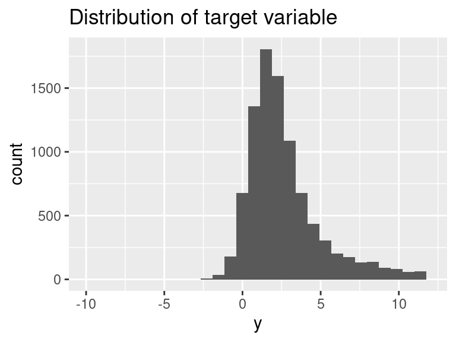
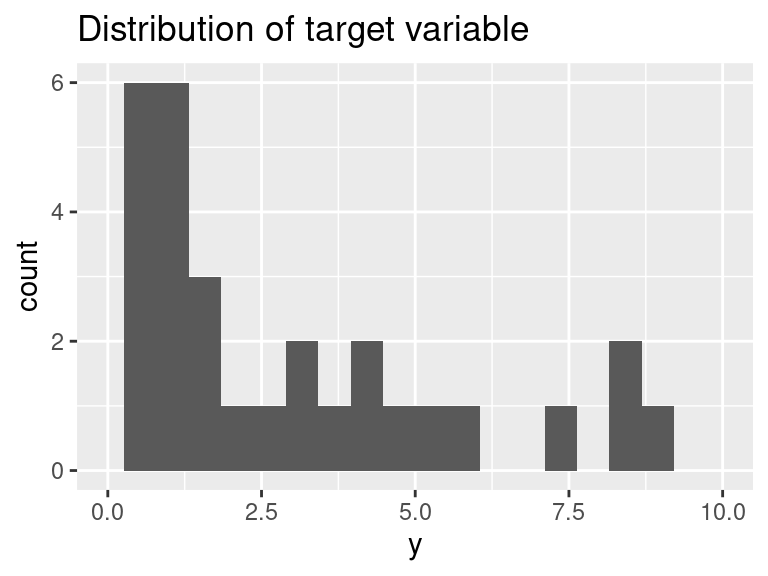
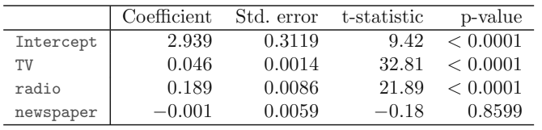

Determine the best distribution and link function to use. Justify your choice of distribution based on the business problem and data and use only that combination for all further work. Test several combinations and select the one with the best AIC, QQ-plot, and graphs of residuals vs. fitted.
The distribution of the target variable \(Y\) is shown below, for \(n = 10,000\) observations.

## Min. 1st Qu. Median Mean 3rd Qu. Max.
## -3.9828 -0.2085 0.4971 0.4904 1.1956 4.4772glm <- glm(formula=y ~ x, family = gaussian(link = "log"), data = glmdata1)
summary(glm)
par(mfrow = c(2,2))
plot(glm, cex= 0.1)Note: if you return an “invalid formula” error it means that the algorithm failed to converge.
#possible families are binomial, guassian, Gamma, inverse.gaussian, poisson, quasi, quasibinomial, quasipoisson#possible link functions are logit, probit, cauchit, cloglog, log, sqrt, 1/mu^2, inverseDetermine the best distribution and link function to use. Justify your choice of distribution based on the business problem and data and use only that combination for all further work. Test several combinations and select the one with the best AIC, QQ-plot, and graphs of residuals vs. fitted.
The distribution of the target variable \(Y\) is shown below, for \(n = 10,000\) observation.

## Min. 1st Qu. Median Mean 3rd Qu. Max.
## -2.482 1.253 2.323 8.548 4.279 2733.616glm <- glm(formula=y~x, family = inverse.gaussian(link = "log"), data = glmdata2)
summary(glm)
par(mfrow = c(2,2))
plot(glm,cex= 0.1)Note: if you return an “invalid formula” error it means that the algorithm failed to converge.
Determine the best distribution and link function to use. Justify your choice of distribution based on the business problem and data and use only that combination for all further work. Test several combinations and select the one with the best AIC, QQ-plot, and graphs of residuals vs. fitted.
The distribution of the target variable \(Y\) is shown below, for \(n = 1,000\) observation.

## Min. 1st Qu. Median Mean 3rd Qu. Max.
## 0.000e+00 1.895e+11 1.437e+21 2.199e+41 1.345e+32 2.986e+43glm <- glm(y ~ x, family = Gamma(link = "log"), data = glmdata3)
summary(glm)
par(mfrow = c(2,2))
plot(glm,cex= 0.1)Note: if you return an “invalid formula” error it means that the algorithm failed to converge.
#There are only 1,000 observations instead of 10,000 in the previous questions. This causes gaps to appear in the histogram but does not change the shape of the distribution.Generalized Linear Models (GLMs) are a flexible framework for linear models. There are two assumptions which characterize the GLM depending on the shape of the target variable (also known as the response distribution) and the way that the linear predictor is related to the mean of the response.
These are:
A random component: \(Y|X \sim \text{some exponential family distribution}\)
A link: between the random component and covariates:
\[g(\mu(X)) = X\beta\] where \(g\) is called the link function and \(\mu = E[Y|X]\).
Which of the below statements are false?
The canonical link function always ensures that the linear predictor will match the domain of the mean of the response distribution.
If the target distribution is binary, then the logit is a common choice.
Becuase the logit link is not monotonic, interpreting the signs of the coefficients (i.e., whether they increase or decrease the probability of the target being 1 instead of 0), is not done in the same way as for a log link.
The canonical link functions are only useful for simplifying the math and making convergence more likely and the final choice of link function should always depend on the results on the holdout set as well as the requirements of the business problem.
If the target distribution is strictly positive, then a log link is a good candidate because it forces the predictions of the GLM (i.e., the linear predictor) to always be positive.

You have just trained a linear model to predict the annual sales of an auto insurance policy based on the advertising channel of either TV, radio, or newspaper. These predictor variables TV, radio, and newspaper are 1 when an add is run and 0 when no ad is run. Their reference level (base level) is 0.
Describe the null hypotheses to which the p-values above table corresponds. Explain what conclusions you can draw based on these p-values. Your explanation should be phrased in terms of sales, TV, radio, and newspaper, rather than in terms of the coefficients of the linear model.
Which statements below are true?
The null hypothesis for TV is that when no radio or newspaper ads are run, the TV ads have no effect on sales.
The null hypothesis for TV is that in the presence of radio ads and newspaper ads, TV ads have no effect on sales.
The null hypothesis for radio is that in the presence of TV and newspaper ads, radio ads have no effect on sales.
The null hypothesis for radio is that when no radio or newspaper ads are run, radio ads have no effect on sales.
The high p-value of newspaper suggests that the null hypothesis is true for newspaper.
The high p-value of newspaper suggests that the null hypothesis is false for newspaper.
This contains weekly stock data for the S&P 500. There are 1,089 weekly returns for 21 years, from the beginning of 1990 to the end of 2010. The target variable is Direction, which is whether the market had a positive or negative return on a given week. The “lag” predictor variables are the returns for prior weeks.
Use the full data set to perform a logistic regression with Direction as the response and the five lag variables plus Volume as predictors.
## Year Lag1 Lag2 Lag3
## Min. :1990 Min. :-18.1950 Min. :-18.1950 Min. :-18.1950
## 1st Qu.:1995 1st Qu.: -1.1540 1st Qu.: -1.1540 1st Qu.: -1.1580
## Median :2000 Median : 0.2410 Median : 0.2410 Median : 0.2410
## Mean :2000 Mean : 0.1506 Mean : 0.1511 Mean : 0.1472
## 3rd Qu.:2005 3rd Qu.: 1.4050 3rd Qu.: 1.4090 3rd Qu.: 1.4090
## Max. :2010 Max. : 12.0260 Max. : 12.0260 Max. : 12.0260
## Lag4 Lag5 Volume Today
## Min. :-18.1950 Min. :-18.1950 Min. :0.08747 Min. :-18.1950
## 1st Qu.: -1.1580 1st Qu.: -1.1660 1st Qu.:0.33202 1st Qu.: -1.1540
## Median : 0.2380 Median : 0.2340 Median :1.00268 Median : 0.2410
## Mean : 0.1458 Mean : 0.1399 Mean :1.57462 Mean : 0.1499
## 3rd Qu.: 1.4090 3rd Qu.: 1.4050 3rd Qu.:2.05373 3rd Qu.: 1.4050
## Max. : 12.0260 Max. : 12.0260 Max. :9.32821 Max. : 12.0260
## Direction
## Down:484
## Up :605
##
##
##
## ## Year Lag1 Lag2 Lag3 Lag4
## Year 1.00000000 -0.032289274 -0.03339001 -0.03000649 -0.031127923
## Lag1 -0.03228927 1.000000000 -0.07485305 0.05863568 -0.071273876
## Lag2 -0.03339001 -0.074853051 1.00000000 -0.07572091 0.058381535
## Lag3 -0.03000649 0.058635682 -0.07572091 1.00000000 -0.075395865
## Lag4 -0.03112792 -0.071273876 0.05838153 -0.07539587 1.000000000
## Lag5 -0.03051910 -0.008183096 -0.07249948 0.06065717 -0.075675027
## Volume 0.84194162 -0.064951313 -0.08551314 -0.06928771 -0.061074617
## Today -0.03245989 -0.075031842 0.05916672 -0.07124364 -0.007825873
## Lag5 Volume Today
## Year -0.030519101 0.84194162 -0.032459894
## Lag1 -0.008183096 -0.06495131 -0.075031842
## Lag2 -0.072499482 -0.08551314 0.059166717
## Lag3 0.060657175 -0.06928771 -0.071243639
## Lag4 -0.075675027 -0.06107462 -0.007825873
## Lag5 1.000000000 -0.05851741 0.011012698
## Volume -0.058517414 1.00000000 -0.033077783
## Today 0.011012698 -0.03307778 1.000000000glm_fit = glm(Direction ~ Lag1 + Lag2 + Lag3 + Lag4 + Lag5 + Volume, data = Weekly, family = binomial)
summary(glm_fit)
glm_probs = predict(glm_fit, type = "response")
glm_pred <- as.factor(ifelse(glm_probs > 0.5, "Up", "Down"))
confusionMatrix(glm_pred,Weekly$Direction)$tableUse the confusion matrix to calculate the percentage of the time that the logistic regression accurately predicts the market direction and interpret the result.
SOA Exam PA, June 13, 2019 (Traffic Safety), Task 9.
Your actuarial consulting firm has been hired by the North Carolina Department of Transportation to help them understand the factors that contribute to the severity of vehicle crashes.
Code is provided to fit an elastic net. Adjust the parameters to fit both ridge and elastic net models. Compare the RMSE results on the test set. Use all of the features. No other changes in parameters need be done.
The code provided predicts the target variable using a Gaussian distribution and the identity link. There is no need to try other combinations.
Provide an explanation of the difference in the two approaches (ridge or LASSO). Which of the these would you recommend for this analysis? Do not base your recommendation solely on the mean squared errors from each model.
set.seed(42)
X <- model.matrix(Crash_Score ~ . + Work_Area*Rd_Class, traffic_safety_train)
m <- cv.glmnet(x = X,
y = traffic_safety_train$Crash_Score,
family = "gaussian",
alpha = 1)#make your selection
plot(m)
#This code fits the model to the full training set using the value of lambda that produced the smallest cross-validation error, obtains predicted values for the test set, and then determines the mean squared error.
m.best <- glmnet(x = X,
y = traffic_safety_train$Crash_Score,
family = "gaussian", lambda = m$lambda.min,
alpha = 1) #make your selection
X.test <- model.matrix(Crash_Score ~ . + Work_Area*Rd_Class,traffic_safety_test)
m.best$beta
m.best.predict <- predict(m.best, newx=X.test)
rmse <- sqrt(sum((m.best.predict - traffic_safety_test$Crash_Score)^2)/nrow(traffic_safety_test))
rmse